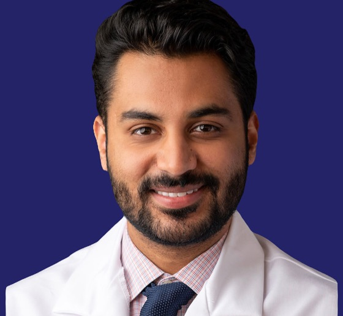

Founder & CEO
Dr. Ahmed Abbasi
An internal medicine physician with experience in outpatient care and academic hospital medicine. He founded Amanah to connect clinical expertise with local healthcare teams.